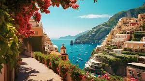
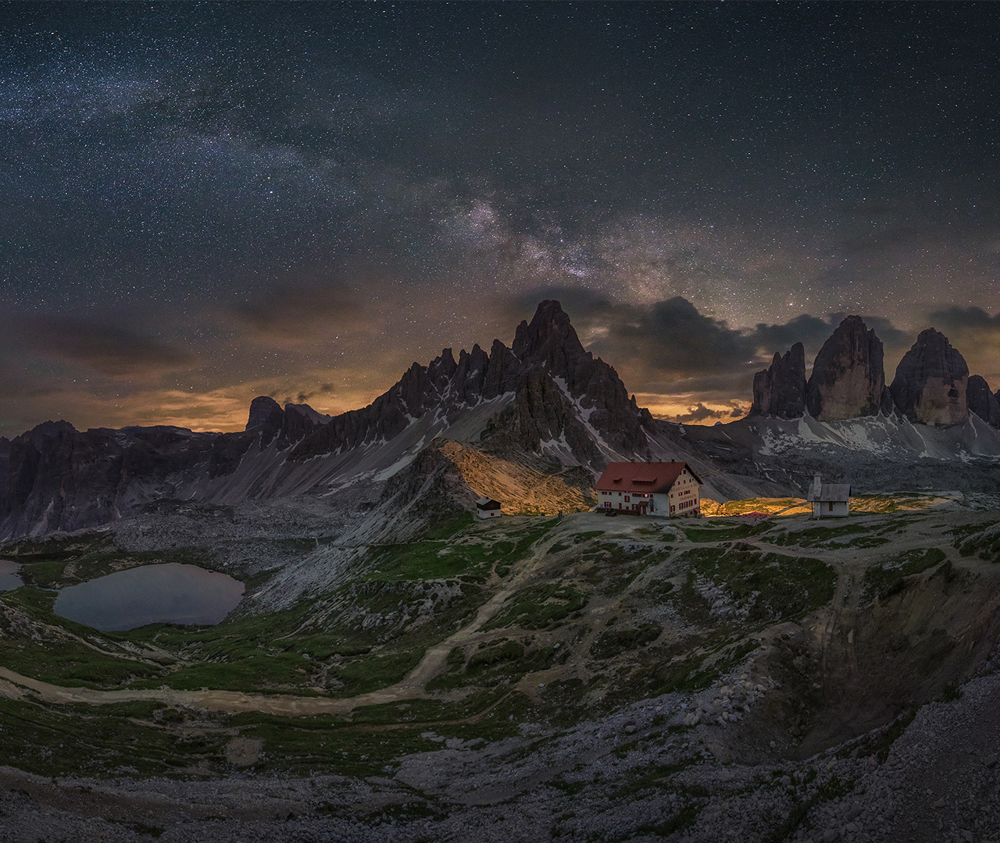
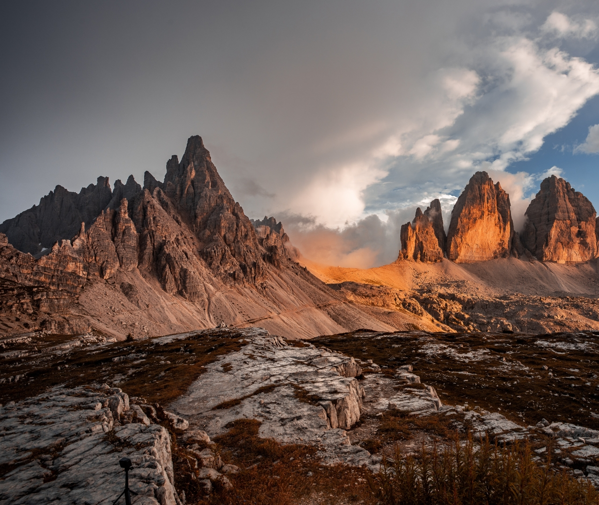
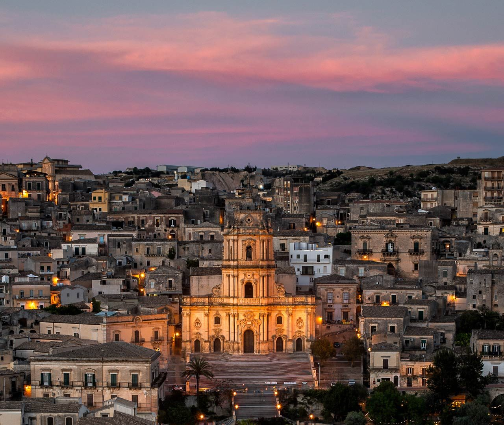

Pagi ini tiba di kota Roma, setelah proses penerbangan selesai, Anda langsung dijemput ke area bandara. Anda diajak berkeliling mengunjungi Baths of Caracalla dan melihat deretan hostel dan berkeliling kota Roma, serta diajak mengunjungi St. Peter's Basilica
Pagi ini dijemput untuk mengunjungi kota Milan dimana Anda diajak menuju Sforzesco Castle untuk berkeliling. Serta mengunjungi Galleria Vittorio Emanuele II
Hari ini setelah sarapan, Anda diajak menuju Sardinia, dimana Anda mengunjungi Olbia yang sepanjang jalan menyuguhkan pemandangan di rute Panorama ini.
Hari ini Anda akan merasakan pengalaman yang mungkin hanya terjadi sekali seumur hidup dimana pagi hari sekali (disarakan memakai jaket) untuk dijemput di lobi hotel untuk mengikuti Uffizi Gallery.
Hari ini meningalkan Italia menuju bandara untuk penerbangan menuju Indonesia